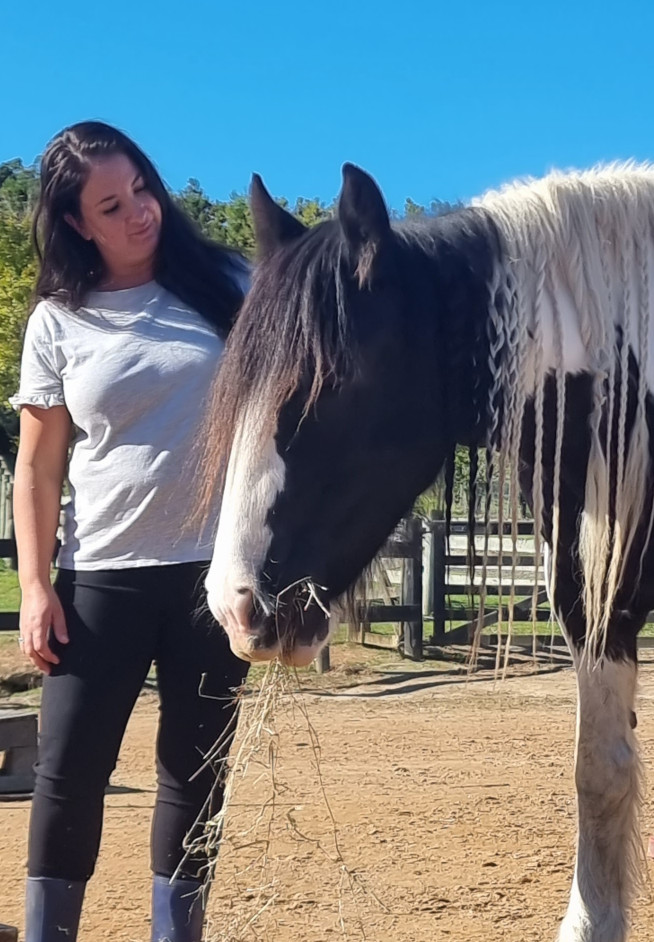

Welcome to Shore Kids Therapy Centre, we are a private child, adolescent and family mental healthcare clinic located in the centre of Albany, North Shore, Auckland.
About Me
I am committed to offering ethical and confidential therapeutic interventions with a difference that are suitable for both short and long-term interventions.
 Catherine Hunt - Registered Child and Adolescent Psychotherapist
Catherine Hunt - Registered Child and Adolescent Psychotherapist
Member of the NZ Association of Psychotherapists (MNZAP)
Qualifications
- Masters of Health Science (Child & Adolescent Psychotherapy, AUT)
- Graduate Diploma in Child & Adolescent Psychotherapy (AUT)
- Diploma Teaching
Professional Experience
I am a Mother with two young children.
I grew up with animals as a major part of my life and now that I am a psychotherapist I also use animals, where appropriate, in my practice.
I have been working in mental health since 2018 and have worked for District Health Boards and NGO services across Auckland in both tertiary services and community care. I spent 11 years teaching in Early Childhood Education (ECE) before moving into mental health.
Services
Here at Shore Kids Therapy we offer a range of therapy services for children, teens and families including Psychotherapy in person or online, Canine Assisted Psychotherapy, Equine Assisted and Family Based Psychotherapy
I am committed to offering ethical and confidential therapeutic interventions with a difference that are suitable for both short and long-term interventions.
My specialty is helping children, young people and their families with feelings and behaviors. I liaise closely with parents/caregivers to hear their concerns, offer support and provide practical solutions while keeping them informed and updated with progress.
I am trained in psychodynamic psychotherapy but in my practice, I use a range of therapeutic models according to age, individual, and family needs. Some of these models include Psychodynamic Therapy, Attachment Therapy, Sand Tray Therapy and Psycho-Education.

Areas of Specialty
- Anxiety, separation anxiety, and social anxiety
- Depression
- Child/Adolescent and parent relationship difficulties
- Adjustment problems including parental separation
- Grief and loss for all ages
- Behaviour problems – Bullying, School refusal, Anger etc
- Friendship issues
- Attachment problems
- Effects of trauma, abuse and neglect
- Eating disorders (FBT trained)

Interventions are tailored to the child or young person’s age and stage of development. The work is suitable for children aged five years up to late adolescents and young adulthood. All sessions are 50 minutes and can be offered weekly or fortnightly.
Children will be seen in a playroom to facilitate their expression through play, adolescents will be more likely to talk about what is happening for them but may also appreciate other forms of expression such as art or the sand tray. This type of therapy helps children to find ways of verbalising their feelings rather than act them out. The aim is to offer a safe therapeutic space for children and their parents/whanau and caregivers.
I use a mix of: child and adolescent psychotherapy, relational psychodynamic psychotherapy and family-based therapy (FBT).
Appointments
Opening hours
- Tuesday 10-3
- Wednesday 10-3
- Thursday 10-5pm (late night)
- Friday 10-7pm (late night)
- Saturday by appointment only (surcharge applies)
Fees
Please enquire about fees. WINZ funding is available in some cases.
Cancellation policy
If you cancel with less than 24 hours notice or fail to show up then you will be automatically invoiced $80 which needs to be paid before continuing therapy.
Canine Assisted Psychotherapy
Canine assisted psychotherapy is offered with our facility dog Riley, who is formerly from Assistance Dogs NZ. Riley works alongside the client in a traditional therapy setting where he compliments the therapeutic alliance.
(Please note that if you have any allergies or a fear of dogs please let us know prior to sessions)

Equine Assisted Psychotherapy
Equine Assisted Psychotherapy is offered at a separate location in Kumeu. Sessions are outdoors and clients are given an option to work with two different herds of horses. These sessions are facilitated by two therapists, an equine specialist and a psychotherapist, ensuring best practice.
There is an additional cost for Equine Assisted Psychotherapy.
|  |
Contact
therapist@shorekidstherapy.co.nz
Please contact me.